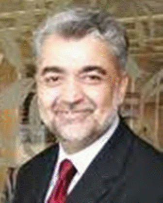
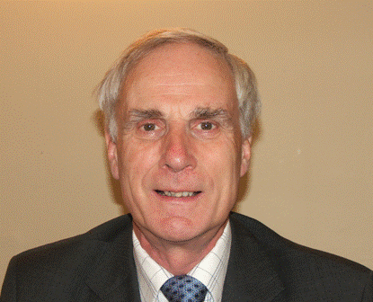
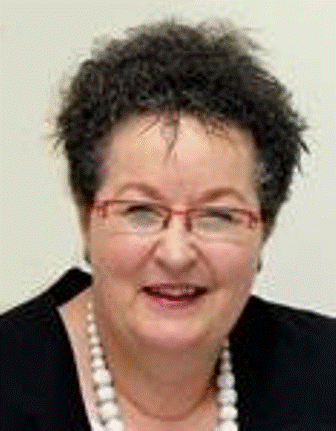
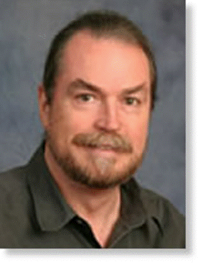
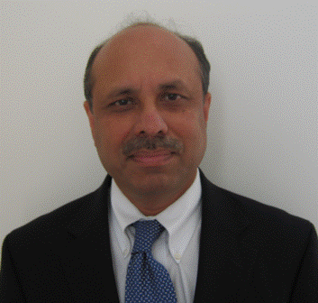

Strategic Guidance
Advisory Board
Distinguished professionals who provide strategic direction and independent counsel to Development Strategies.

William Frederick Shaw
Dr.PH, MPH — Founder & CEO, DIR, USA
View Profile ›

Dr. Nasim Ashraf
MD — Founder & President, DNA Strategies, USA
View Profile ›

Douglas Blackwood
MRCP, PhD, MRCPsych — Professor, University of Edinburgh
View Profile ›

Jane Fisher
BSc, PhD — Professor, Monash University, Australia
View Profile ›

Dr. Tariq H Cheema
MD — Founder & CEO, World Congress of Muslim Philanthropists
View Profile ›

Peter Hill
MBBS, FAFPHM, PhD — Assoc. Professor, University of Queensland
View Profile ›

Abul Hashem
BS, MA — President & CEO, Global Development Support, USA
View Profile ›